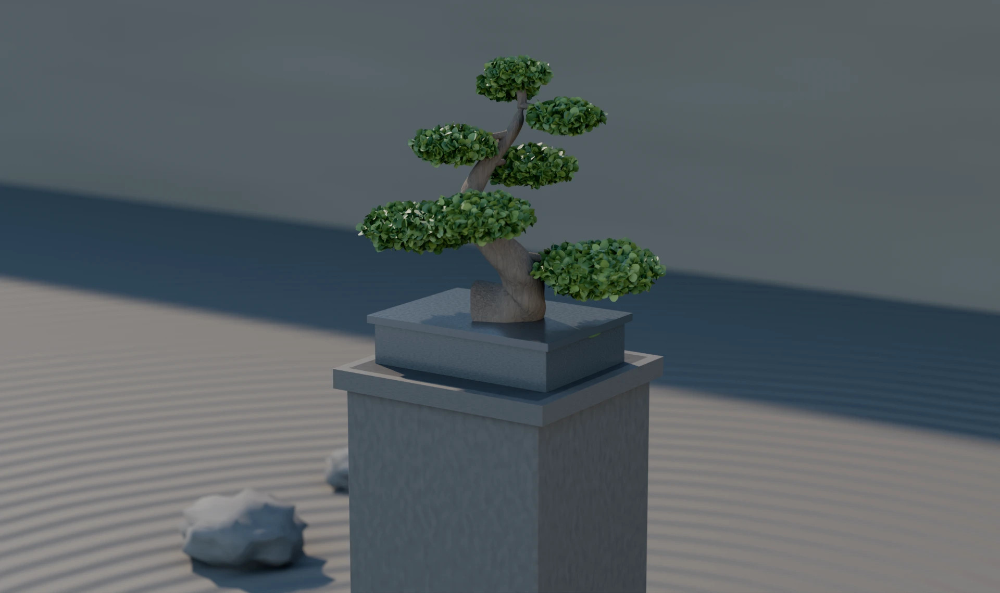

Good Vibe Games
Greener Thumbs
Collect specimens and keep them alive. Three species, a greenhouse, and a season that runs a real week — neglect shows, and it kills.

Good Vibe Games
Collect specimens and keep them alive. Three species, a greenhouse, and a season that runs a real week — neglect shows, and it kills.